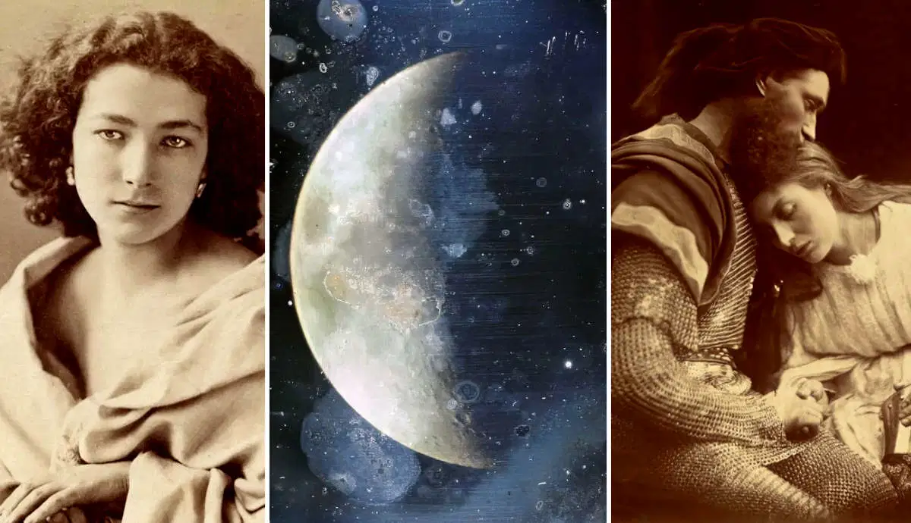
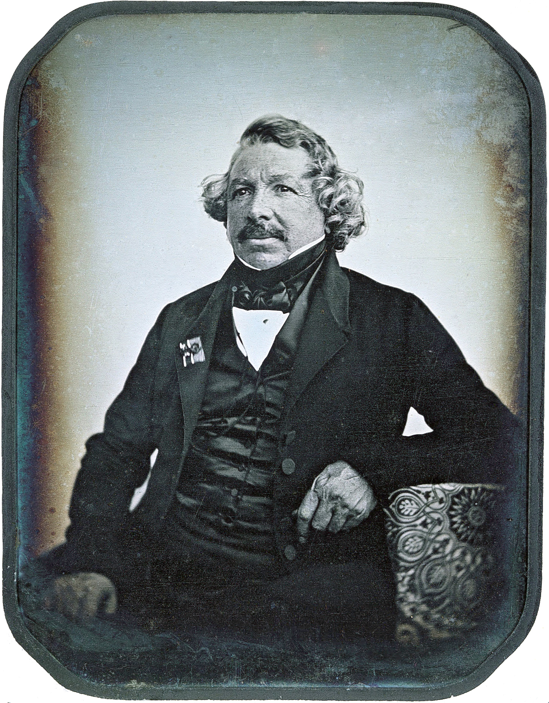
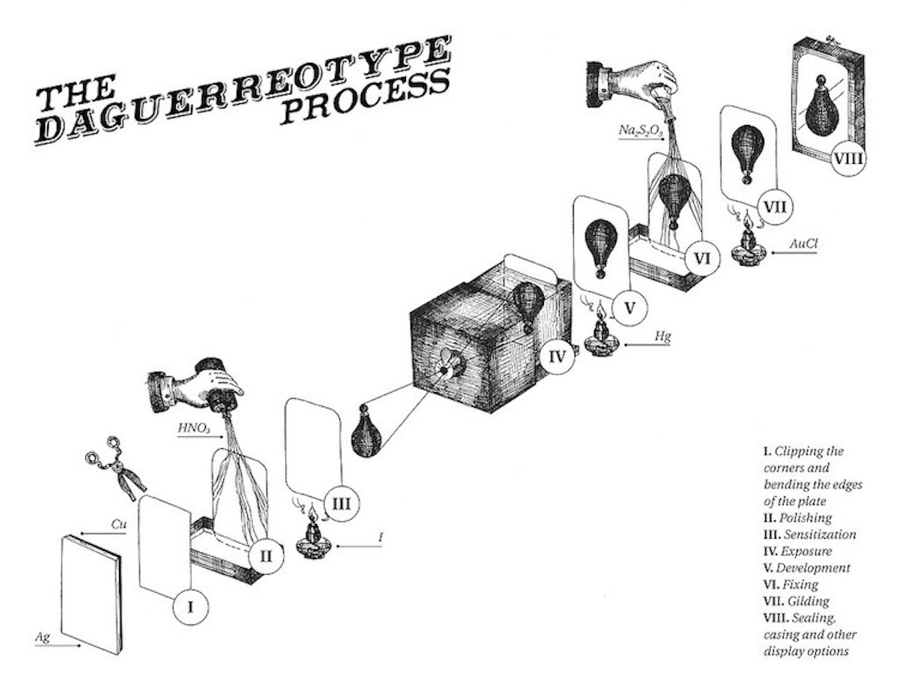
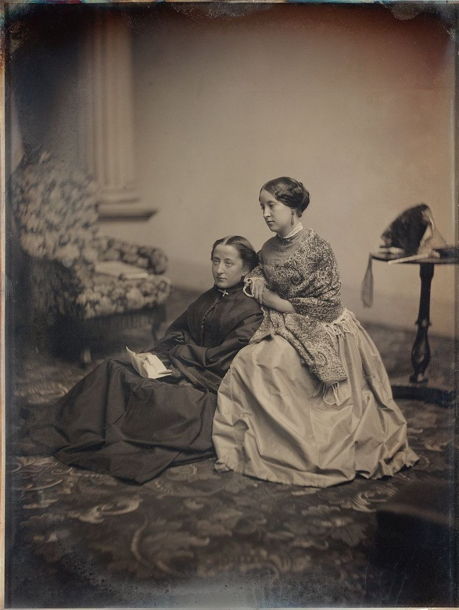
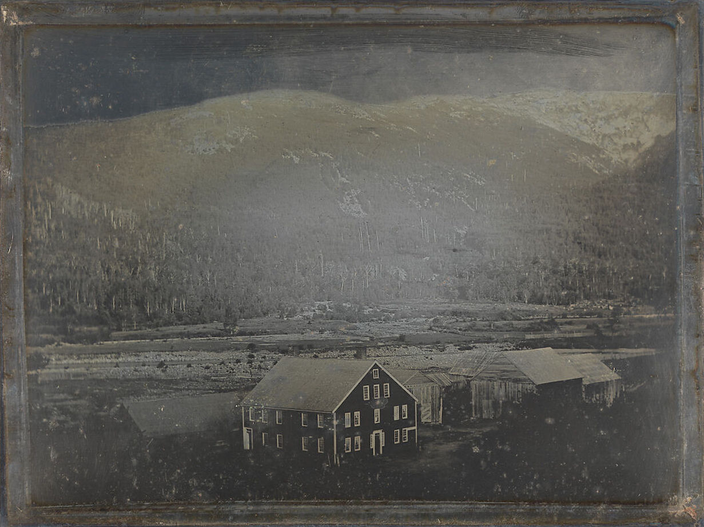
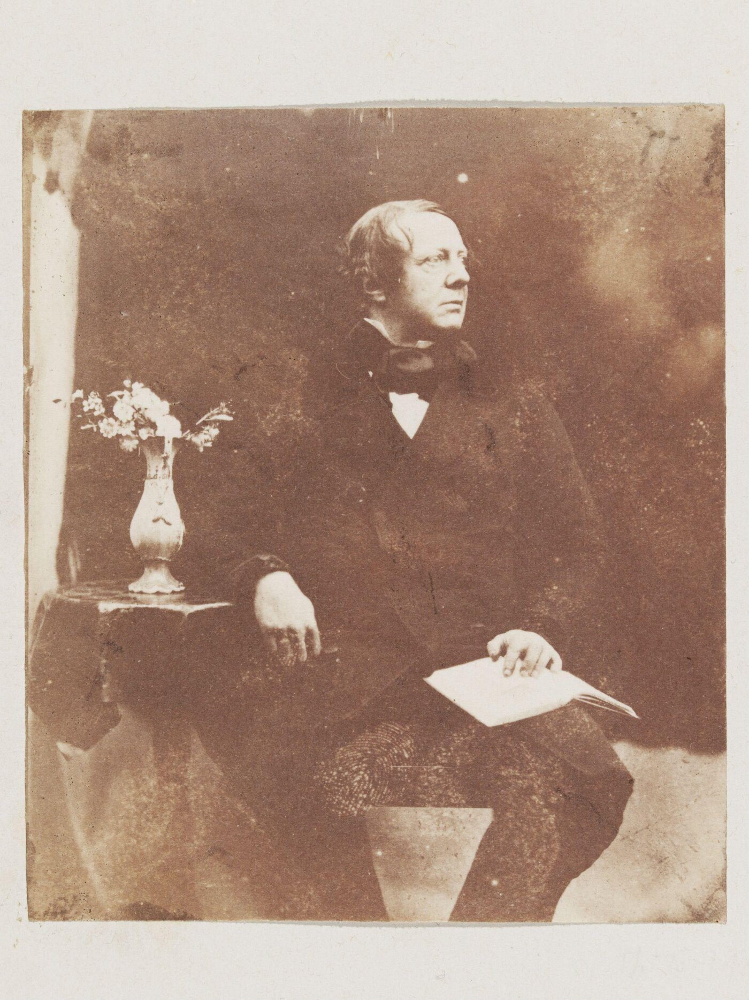
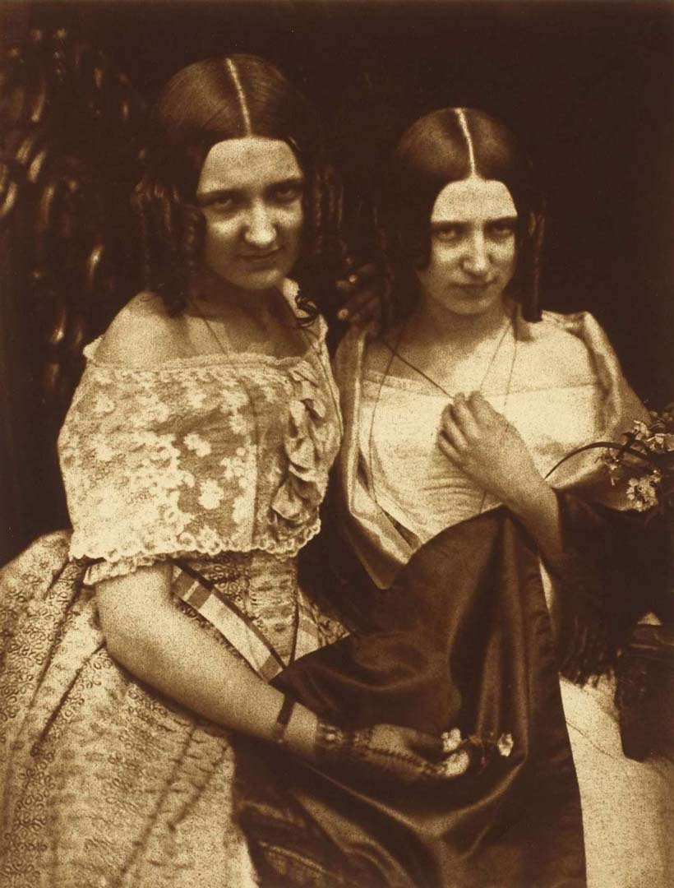
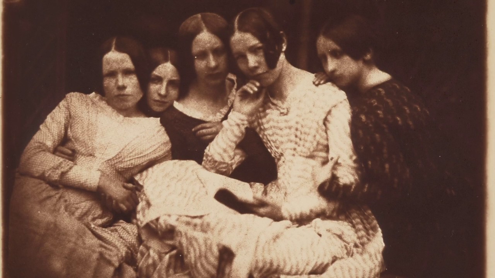
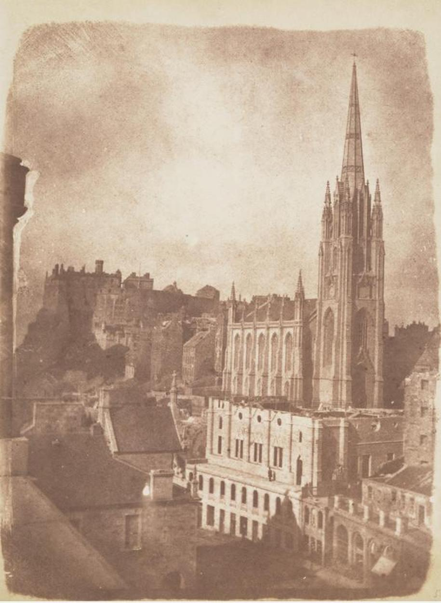

Exploring 4 Key Techniques from 19th-Century Photography
During the nineteenth century photography was invented. Here’s everything you need to know about the techniques used in 19th-century photography.

Before the invention of the camera, a forerunner called the ‘camera obscura’ was used by the Chinese and ancient Greeks about 2000 years ago. Unlike today’s compact camera boxes, the camera obscura consisted of a dark room with a hole in one of its walls. Through this hole, images of the outside world were projected onto the opposite wall. When in 1727, German anatomy professor Johann Heinrich Schulze confirmed that the darkening of silver salts was caused by light, he further contributed to the invention of the first camera during the nineteenth century. Following on to the first ever camera photograph in 1826, many camera techniques emerged. This article will explore the nineteenth-century camera techniques, together with their inventors and the photographers who made use of them.
1. Best-Known 19th-Century Photography Technique: Daguerreotype

In 1826, Joseph Nicéphore Niépce (1765 – 1833), managed to take the first developed photograph using a technique called the heliography. The heliograph method involved holding a portable camera obscura next to a window, as to expose a pewter plate coated with bitumen or asphalt, to sunlight. After this successful experiment, Niépce began collaborating with French artist and chemist Louis-Jaqcues-Mandé Daguerre (1787 – 1851). Daguerre worked as a professional stage painter for the theatre, using the camera obscura technique for drawing. The fact that he was interested in capturing reflections, brought him and Niépce together.
After Niepcé’s death in 1833, Daguerre continued their work, using Niépce’s early experiments as a foundation. In 1839, Daguerre experienced a breakthrough and developed a pioneering technique. The Daguerreotype was born and so was the first commercially successful photographic process. Daguerre went on to introduce the technique to the French Academy and the Académie des Beaux-Arts. This event was later referred to as the birth of photography.

The Daguerreotype technique consisted of a silver-plated copper sheet that would first be polished until its surface was mirrorlike. After the polishing was done, the copper plate was kept in a dark room, where it was exposed to iodine, bromine, and chlorine vapor to form a light-sensitive layer of silver iodine. The plate would then be placed in the camera, after which it would be exposed to light for a short or long period, depending on how light the photograph was supposed to be. The longer it was exposed, the lighter the result.
Following the exposure, the plate was removed from the camera to let the image develop by exposing it to mercury vapor. After development, the plate would be bathed in a salt solution, which removed the developing compound. To protect the image, the plate was then coated with gold chlorine, before it was covered by a glass sheet and placed into a frame.

There was a downside to the Daguerreotype technique. It could only produce a single copy of an image. Making additional copies wasn’t possible. In addition, the single copy that was made represented a mirrored image of the person portrayed. A daguerreotypist could attach a mirror or reflective prism in front of the lens to obtain the right reading result. Yet, in practice, this was not often done.
Moreover, to ensure that the result of a Daguerreotype photograph was sharp at the end of a long exposure time, it was important for the posing individual to sit very still. Because of this, some Daguerreotypists made use of a head support tool, which ensured that the person’s head was kept in the same position. However, seeing that the Daguerreotype was the first commercially successful photographic technique, these aspects of its process were only minor disadvantages.

Apart from Daguerre himself, a good number of Daguerreotypists arose during the 1840s and 1950s. Among these were the French André-Adolphe-Eugène Disderí and Jules Itier, the Swiss Johann Baptist Isenring, the British Richard Beard, Antoine Claudet (a Frenchman active in London), and Thomas Richard Williams. There were also a good number of Daguerreotypists in the United States. Among these were James Presley Ball, Samuel Bemis, Abraham Bogardus, Mathew Brady, Jeremiah Gurney, Albert Southworth, Augustus Washington, and John Adams Whipple.
In most cases, these Daguerreotypists worked as portraitists, although some also took photographs of landscapes and cities. Wipple even practiced astrophotography. Seeing that the Daguerreotype cameras were large, and their process lengthy and expensive, taking them outside wasn’t very practical. However, some did it anyway and it resulted in beautiful images.

Finally, the Daguerreotype was succeeded by the wet collodion plate technique. Despite the fact that many photographers turned to newer techniques, some kept working with the Daguerreotype. Even today, there are artists who still experiment with this technique. These include Jerry Spagnoli, Adam Fuss, Patrick Bailly-Maître-Grand, and Chuck Close.
2. Calotype

William Henry Fox Talbot (1800 – 1877) was educated at Harrow and Trinity College in Cambridge. He published many articles in the fields of mathematics, astronomy, and physics. He also worked as a chemist, linguist, and archaeologist. He even briefly served in Parliament from 1833 to 1834, before becoming well-known for his photographic technique. In 1835, Talbot made his first photographic negative and wrote an article that documented this discovery. However, he largely abandoned his experiments and left his photographic work untouched for a while.
A few years later, Talbot received news about the French Daguerreotype, which inspired him to continue his own research. Fortunately so, during his new experiments, Talbot found out that the chemical gallic acid, from tree galls and barks, increased the sensitivity of prepared paper and created a latent image. In other words, a latent image is an image made on photographic film or paper that remains invisible until it’s chemically treated.
It was the first process that allowed photographers to create a negative—an image in which the shades of light and dark were reversed from which multiple positive prints could be made. In addition, the gallic acid speeded up the development process from one hour to one minute. Talbot named this new invention the Calotype, referring to the Greek word for beautiful picture. In 1841, Talbot went on to patent the Calotype—sometimes also called the Talbotype—and subsequently received a medal from the British Royal Society in 1842 for it.

When it comes to the technical process, the calotype process involves five steps. The first one of these was to iodize a high-quality sheet of paper by applying solutions of light-sensitive silver nitrate and potassium iodide to the paper under candlelight. Simply said, the paper would be treated with solutions of certain salts and metals. After the first step, the paper would also be washed and dried, before its surface was sensitized by the use of another chemical solution. The third step included putting the sheet of paper in the camera and exposing it to light.
Once the desired image was captured, the paper could be removed. It was important to then brush it with the same sensitizing chemical solution to bring out the invisible image to the desired density. Subsequently, the developed negative would be rinsed with water and then washed with a solution of potassium bromide again, before laying it out to dry. The washing was important as it removed any remaining silver, and fixed the image.
Now that the negative was done, positive prints of the image could be made with the use of the so-called salted paper print process. During this process, the translucent negative would cover a new, prepared sheet of paper, that would react to light. This sheet of paper would then be put in a printing frame, which was then taken outside in order to be exposed to light. Subsequently, the light passes through the lighter parts of the negative, making these go dark in the positive image. The result was a nice, warm sepia-colored image.

Regardless of the flexibility and ease with which the Calotype photographs could be made, this technique did not replace the Daguerreotype. The quality of the Calotype image was not as fine and sharp as that of the Daguerreotype. The main difference in quality between these types of photographic techniques was caused by the difference in the material of the negative. In a Calotype, the texture and fibers of the paper were visible, which made the image slightly grainy or fuzzy. In Daguerreotype photographs, this was less of an issue thanks to the use of polished copper sheets. Regardless of this, the Calotype remained popular in England and mainland Europe. The Calotype wasn’t as popular in France, the native country of Daguerre, as well as in the United States.

Some of the best-known Calotypists were the Scottish photographer Robert Adamson and landscape painter David Octavius Hill. As Scotland was exempt from Talbot’s patent, people could freely use the Calotype here. The partnership between Hill and Adamson was formed in 1843. During this year, Hill received a commission for a group portrait of over four hundred ministers of the Free Church of Scotland. Because there were so many people to paint, Sir David Brewster, a physician who had learned about the Calotype process from Talbot himself, suggested photography to Hill. Hill then reached out to Adamson, and their partnership began. Moreover, they photographed ministers and many other individuals as well as a number of cityscapes.
3. The Wet Plate Collodion
Read the full article on www.thecollector.com and discover the two remaining photography techniques of the 19th century.